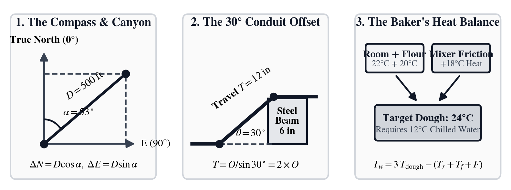
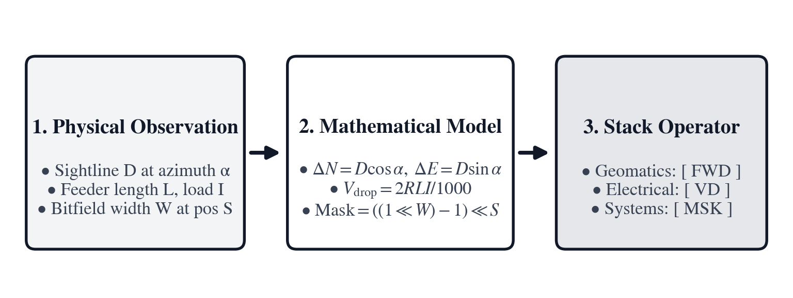
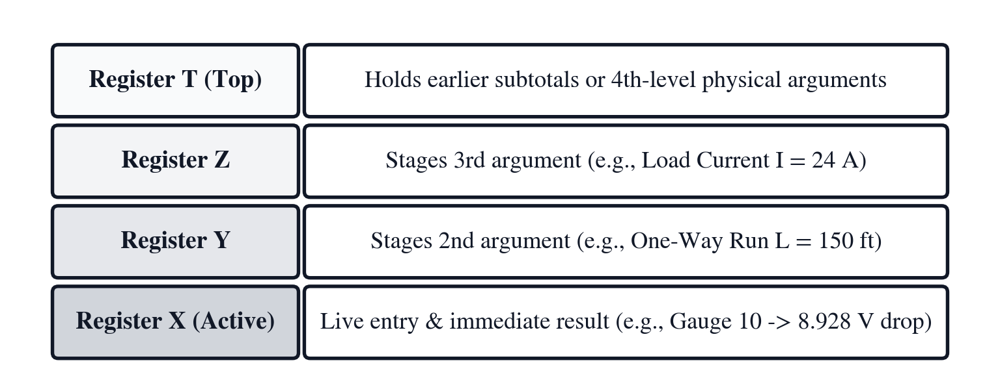

Prologue: When Mathematics Meets the Physical Trades
In the summer of 1858, sailors aboard two steamships met in the middle of the North Atlantic, spliced two coils of copper cable together, and lowered the joint into two miles of dark ocean water. As HMS Agamemnon steamed eastward toward Ireland and USS Niagara steamed westward toward Newfoundland, they paid out the first telegraph line ever to connect two continents.
Below deck on the Agamemnon sat a thirty-four-year-old Scottish physicist named William Thomson, who would later become Lord Kelvin. All across Europe and America, newspapers celebrated the end of distance. In university classrooms, electricity had been taught as a weightless, instantaneous fluid: when you closed a switch in London, a crisp rectangular pulse of current was supposed to appear in New York at the speed of light.
Sitting in the ship's cabin watching a tiny mirror suspended on a silk thread, Thomson saw something very different. Two thousand miles of copper wire wrapped in tree resin and submerged in icy salt water did not behave like a blackboard diagram. The copper resisted the flow of electrons, while the surrounding ocean acted like a giant capacitor that soaked up electrical charge. By the time a sharp Morse code dot traveled from Ireland to Newfoundland, it arrived as a slow, gentle swell that took seconds to rise and fade.
Worse still, the chief electrician in London refused to believe Thomson's equations. Convinced that a sluggish signal simply needed a harder push, he connected giant high-voltage induction coils to the wire. Within weeks, the electrical pressure burned through the insulation on the ocean floor, and the Atlantic cable went silent.
Twenty-five years later, speaking to the Institution of Civil Engineers in London, Lord Kelvin summed up the lesson of that summer at sea: until you can measure what you are speaking about and express it in numbers, your knowledge is meager and unsatisfactory.
Where Classroom Equations Meet the Real World
In pure mathematics, relationships exist in frictionless abstraction: lines possess zero width, numbers expand without word-length boundaries, and conductors carry charge without thermal dissipation. The physical trades exist at the boundary where these mathematical abstractions collide with the properties of matter.
The moment an equation crosses from paper into physical implementation—across a forested survey corridor, an industrial transformer bay, a fermentation floor, or an intensive-care suite—nature imposes uncompromising boundary conditions:

- The Surveyor's Compass and the Canyon: Suppose you stand on the rim of a river canyon holding a magnetic compass. Unlike a classroom protractor that puts \(0^\circ\) on the right, every compass needle on Earth points to True North (\(0^\circ\)) at the top of the dial, and its angles increase clockwise toward East (\(90^\circ\)), South (\(180^\circ\)), and West (\(270^\circ\)). When a surveyor sights a target \(500\text{ feet}\) away at a clockwise compass angle of \(53^\circ\), that simple change of direction swaps the familiar roles of sine and cosine.
- The Electrician's Bent Steel Pipe: Imagine running a rigid steel pipe along a factory wall when you meet a \(6\text{-inch}\)-thick steel beam blocking your path. To climb over the beam cleanly, the electrician bends the pipe upward at \(30^\circ\) and then bends it back flat at the top. Because the sine of \(30^\circ\) is exactly \(\frac{1}{2}\), climbing \(6\text{ inches}\) vertically requires placing the two bends exactly \(2 \times 6 = 12\text{ inches}\) apart along the pipe.
- The Baker's Spinning Mixer: When a bakery kneads two hundred loaves of bread dough in a heavy steel spiral mixer, the friction of the spinning steel hook heats the dough by \(18^\circ\text{C}\) during mixing. If the dough comes out too warm, the yeast races out of control and the bread collapses. To hit an exact target dough temperature of \(24^\circ\text{C}\), the baker works backward from the room, flour, and friction temperatures to calculate how cold the tap water must be—and how many kilograms of crushed ice must melt inside the bowl.
Forward Chains and Backward Puzzles: One Story, Two Ways of Thinking
In every skilled trade, people who use the same physical law every day eventually give it a short operational name. A land surveyor does not say, "Let us apply the Pythagorean theorem and four-quadrant arc-tangent to our Northing and Easting differences." Instead, the surveyor calls that check an Inverse ([INV]). A pipefitter calls the geometry of bending pipe over a beam an Offset ([OFS]). A cinematographer calls the zone of sharp focus Depth of Field ([DOF]), and a baker calls scaling a recipe to flour weight Baker's Percentage ([BK%]).
Why do practitioners in the field use a stack calculator with dedicated domain keys instead of a basic four-function calculator or a spreadsheet? Because field problems almost always come in pairs: first you chain measurements forward, and then a real-world limit forces you to solve the same problem backward.
Suppose an electrician is wiring a \(240\text{ V}\) motor at the end of a \(150\text{-foot}\) pier using medium-gauge copper wire (#10 AWG). Copper is a wonderful conductor, but it is not perfect: every \(1{,}000\text{ feet}\) of #10 AWG copper wire has an electrical resistance of \(1.24\text{ ohms}\) (\(\Omega\)). Because electricity must travel \(150\text{ feet}\) out to the motor and \(150\text{ feet}\) back along the return wire, the current travels through \(300\text{ feet}\) of copper in total.

1. Thinking Forward on the Four-Register Stack
When the motor draws \(24\text{ amperes}\) of current, how much voltage is lost as heat along the \(300\text{-foot}\) round trip? By Ohm's law, voltage drop is simply resistance times current.
On the four-register RPN stack (Figure 0.3), four visible lines—Registers \(T, Z, Y,\) and \(X\) from top to bottom—hold your numbers as you build the calculation from the inside out:

Each physical step evaluates directly in Register \(X\) at the bottom of the screen:
| Keystroke | Register T | Register Z | Register Y | Register X | What Happens on the Stack |
|---|---|---|---|---|---|
10 [AWG] |
\(0\) | \(0\) | \(0\) | \(1.24\) | Look up copper resistance for #10 AWG (\(1.24\ \Omega\text{ per }1{,}000\text{ ft}\)) |
2 [×] 150 [×] |
\(0\) | \(0\) | \(0\) | \(372\) | Multiply by \(2 \times 150\text{ ft}\) round-trip distance (\(372\ \Omega\cdot\text{ft}\)) |
24 [×] 1000 [÷] |
\(0\) | \(0\) | \(0\) | \(8.928\) | Multiply by \(24\text{ A}\) current and divide by \(1{,}000\text{ ft}\) (\(8.928\text{ V}\) lost) |
240 [÷] 100 [×] |
\(0\) | \(0\) | \(0\) | \(3.72\) | Compare \(8.928\text{ V}\) against the \(240\text{ V}\) supply (\(3.72\%\) drop) |
If all three numbers—current (\(24\text{ A}\)), one-way length (\(150\text{ ft}\)), and wire gauge (10)—are already sitting on the stack in Registers \(Z, Y,\) and \(X\), pressing [AWG] performs that entire round-trip calculation in a single keystroke and puts 8.928 volts directly into Register \(X\).
(And if a calculation ever needs more than four shelves, opening [↱] [FLAGS] lets you switch stack depth from classic four-level [4-LV] to eight-level [8-LV] or unlimited deep stack [INF].)
2. Thinking Backward in the Equation Solver Workspace
In field engineering, calculations rarely proceed in a single direction.
The National Electrical Code recommends losing no more than \(3.0\%\) of your supply voltage on a branch circuit so motors do not overheat. On a \(240\text{ V}\) line, \(3.0\%\) is \(0.03 \times 240 = \mathbf{7.20\text{ V}}\). Our \(150\text{-foot}\) wire lost \(8.928\text{ V}\) (\(3.72\%\)), which exceeds the code recommendation.
So the electrician asks the backward question: If I am only allowed to lose \(7.20\text{ V}\), what is the longest one-way distance \(L\) I can run #10 AWG wire at \(24\text{ A}\)?
Instead of rearranging algebra on a scrap of cardboard, pressing [AWG] on an empty stack opens its Equation Solver Workspace. The top line of the screen shows the wire-drop formula (D = 2×R×L×I / 1000), and the row of softkeys right below the screen becomes the formula's named variables:
- [D] for Voltage Drop (\(7.20\text{ V}\))
- [R] for Wire Resistance (\(1.24\ \Omega/\text{kft}\), loaded automatically when you key
10[AWG]) - [L] for One-Way Length (the target unknown)
- [I] for Current (\(24\text{ A}\))
You simply type the numbers you know into their softkeys—7.20 [D] and 24 [I]—and then press [↱] [SOLVE] [L]. The calculator solves the equation backward and answers immediately: \(L = \mathbf{120.97\text{ feet}}\).
Every domain instrument supports these three ways of working: chaining values forward on the RPN stack, opening a bidirectional Equation Solver Workspace to solve backward for any variable, and pressing the Reference Table key ([g] [▦]) to inspect live field tables like survey coordinates, wire gauges, or the periodic table of elements.
The Architectural Unity of Applied Mathematics
Why are these nine disciplines gathered in a single volume? A casual glance might suggest nine specialized professions operating in isolation. Yet across the physical trades, applied mathematics is not an arbitrary assortment of isolated techniques—it is a single, interconnected grammar of physical law.
Each field in this volume represents a distinct physical domain where fundamental mathematical structures govern practical outcomes: 1. Geomatics & Navigation (Unit I): Euclidean vector spaces, spherical trigonometry, and coordinate transformations establish spatial ground truth across terrain and airspace. 2. Electrical Power & Industrial Trades (Unit II): Complex AC phasors, Ohm's law, and raceway geometry govern power distribution, motor torque, and fluid loops. 3. Digital Systems & Cyber Operations (Unit III): Finite modular rings, bitwise boolean logic, and discrete timing prescalers command embedded microcontrollers and industrial communications. 4. Cinema Optics & Live Acoustics (Unit IV): Geometric optics, rotary shutter kinematics, SMPTE timecode arithmetic, and logarithmic sound pressure fields synchronize light and acoustic waves. 5. RF & Spectrum Engineering (Unit V): Distributed transmission-line wave reflections, complex Smith chart impedance matching, and Friis path losses govern electromagnetic propagation. 6. Wet-Lab Stoichiometry & Analytics (Unit VI): Discrete Avogadro atom counting, logarithmic pH equilibria, and Beer–Lambert photon attenuation quantify molecular reactions. 7. Culinary Arts & Brewing Science (Unit VII): Flour-anchored Baker's percentages, sensible and latent-heat enthalpy balances, and enzymatic reaction kinetics scale commercial fermentation. 8. Clinical Pharmacy & Critical Care (Unit VIII): Anthropometric compartment modeling, first-order pharmacokinetic elimination, and continuous vasoactive mass-flux titrations guard physiological life. 9. Quantitative Finance & Metrology (Unit IX): Geometric multi-period discounting, fixed-income bond duration and convexity, and Gaussian Six Sigma dispersion limits discipline capital and manufacturing tolerances.
Across all nine fields, the mathematical structures are isomorphic: vector projections that resolve an aircraft crab angle also balance a three-phase power factor; exponential decay that discharges an RC timing network also models renal antibiotic clearance and financial present-value discounting; and logarithmic scaling that measures sound pressure in an auditorium also governs radio-frequency path gain and aqueous chemical acidity.
By mastering the four-register operational stack, the practitioner commands this universal mathematical grammar across any physical trade.
Nine Worlds of Applied Mathematics
| Unit | Domain & Instrument | Core Mathematical Concepts |
|---|---|---|
| Unit I (Chapters 1–3) | Geomatics, Land Surveying & Flight Navigation (SC-35) |
Clockwise North azimuths, slope reduction, traverse closure, Gauss's shoelace area formula, circular and parabolic highway curves, differential spirit leveling, wind-triangle vectors, density altitude, and center-of-gravity moments |
| Unit II (Chapters 4–6) | Electrical Power, Conduit Geometry & Industrial Trades (SC-14) |
Ohm's law, feeder voltage drop, three-phase AC power triangles, reactive power factor correction, parallel conduit offset and saddle trigonometry, machining surface speed, Darcy–Weisbach pipe friction, pump horsepower, and \(4\text{--}20\text{ mA}\) instrumentation scaling |
| Unit III (Chapters 7–9) | Digital Systems, Bitwise Logic & Embedded Timing (SC-16) |
Binary and hexadecimal radix representation, two's complement modular rings, bitwise masking, fixed-point scaling, byte-order endianness, IEEE-754 floating-point encoding, CRC polynomial division, \(RC\) exponential relaxation, PWM duty cycles, and IPv4 subnetting |
| Unit IV (Chapters 10–12) | Cinema Optics, Broadcast Timecode & Live Acoustics (SC-24) |
SMPTE 29.97 drop-frame timecode arithmetic, frame-rate speed ramps, Gaussian thin-lens optics, hyperfocal distance, depth of field, rotary shutter exposure, logarithmic decibel power addition, acoustic propagation delay, and room standing-wave modes |
| Unit V (Chapters 13–15) | Radio-Frequency Engineering, Transmission Lines & Link Budgets (SC-50) |
Decibel-milliwatt (\(\text{dBm}\)) power scaling, transmission-line reflection coefficients, standing wave ratio (\(\text{VSWR}\)), quarter-wave impedance transformers, \(LC\) resonance, quality factor (\(Q\)), Friis free-space path loss, Johnson–Nyquist thermal noise, and Shannon channel capacity |
| Unit VI (Chapters 16–18) | Wet-Lab Chemistry, Stoichiometry & Optical Spectroscopy (SC-60) |
Avogadro's molar bridge, 118-element molecular weights, stock dilution conservation, Sørensen's logarithmic \(\text{pH}\) scale, weak-acid equilibrium, Henderson–Hasselbalch buffers, Beer–Lambert optical absorbance, ideal gas thermodynamics, Nernst redox potentials, and centrifugal \(g\)-force |
| Unit VII (Chapters 19–21) | Commercial Baking, Dough Thermodynamics & Brewing Science (SC-78) |
Flour-anchored baker's percentages, preferment hydration splits, mixer friction calorimetry, latent heat of fusion for ice additions, butcher and produce trim-yield economics, all-grain mash strike thermodynamics, specific gravity and Plato sugar density, and Tinseth hop isomerization kinetics |
| Unit VIII (Chapters 22–24) | Clinical Dosing, Renal Clearance & Pharmacokinetics (SC-80) |
Mosteller geometric body surface area, Devine ideal and adjusted body weight, Cockcroft–Gault renal clearance, continuous weight-based IV pump titration, powder reconstitution displacement, pediatric fluid rules, first-order half-life decay, steady-state trough accumulation, and acid-base anion gap |
| Unit IX (Chapters 25–27) | Quantitative Finance, Fixed-Income Valuation & Six Sigma Quality (SC-95) |
Present-value discounting, mortgage amortization, net present value (\(\text{NPV}\)), internal rate of return (\(\text{IRR}\)), fixed-income bond pricing, Macaulay duration, continuous compounding, break-even cost-volume-profit analysis, Gaussian normal quantiles, confidence intervals, and Six Sigma capability (\(C_{pk}\)) |
| Appendices A–C | Reference Compendium | Appendix A: Cross-Domain Formula & Governing Equation Compendium • Appendix B: Domain Keycap, Softkey & Operator Directory (SC-35 through SC-95) • Appendix C: Solutions to Chapter Practice Problems (135 Field Exercises) |